MkDocs Enric
For full documentation visit mkdocs.org.
Explicació instalasio maquina
A la instalació básica lo unico que cambiarem sera el espai a 50 gb
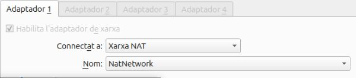
Després haurem d’anar a crear la xarxa nat i li ficarem un nom amb el meu cas el he deixat predeterminat
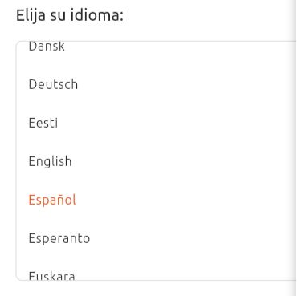
Seleccionarem el idioma i elegim el que vulgem
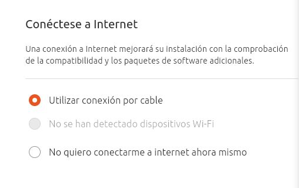
Selecionarem a conectarse per cable i seguim ficant tot en predeterminat
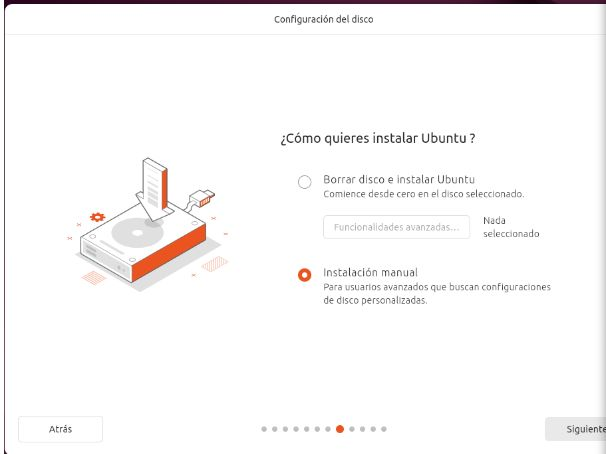
Aqui cambiem i fiquem instalació manual
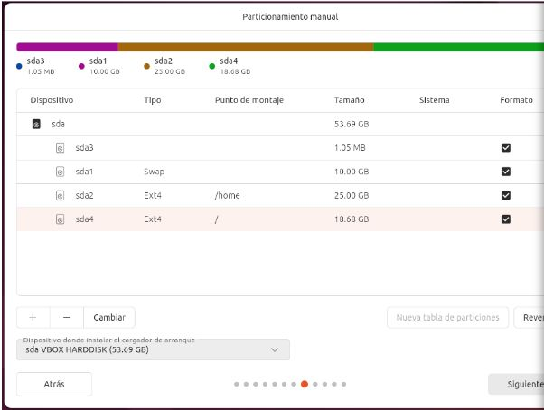
Aquí fem 3 particions 10 gb per a swap , 25 per al /home i el que queda a la arrel ( / )
Fem la configuració basica del ubuntu fiquem el nom de la màquina i la contrasenya
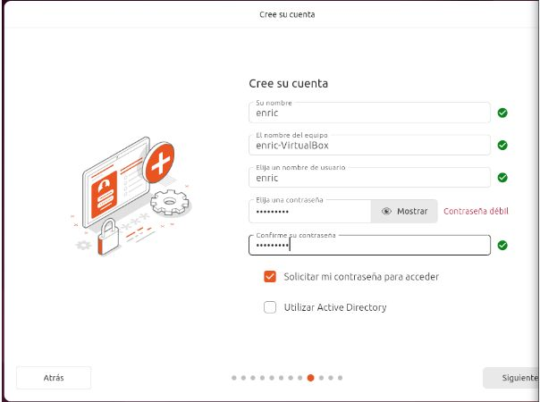
Fem la configuració basica del ubuntu fiquem el nom de la màquina i la contrasenya
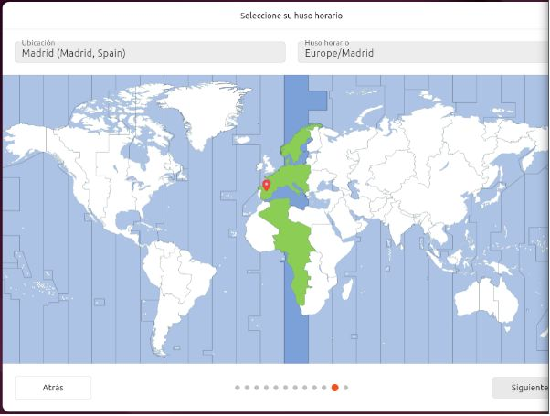
Selecionem de hon som li donarem a següent i instalar
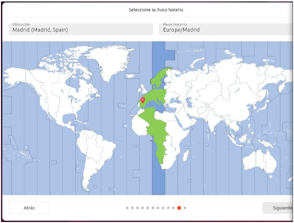
Selecionem de hon som li donarem a següent i instalar
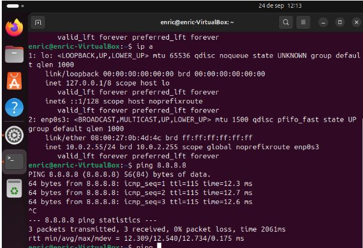
Despres de la configuracio de la nat mirem si ens funciona la xarxa i si tenim una ip bonadespres de la configuracio de la nat mirem si ens funciona la xarxa i si tenim una ip bona
Explicació Boot repair
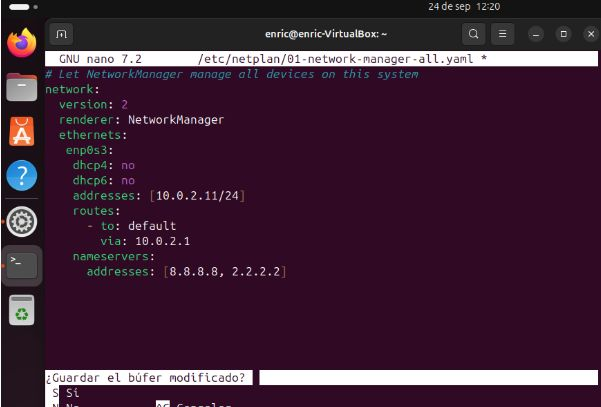
Configurem el directori /etc/netplan/01-network-manager-all.yaml
Aqui es veu que instalem la iso de bot-repair
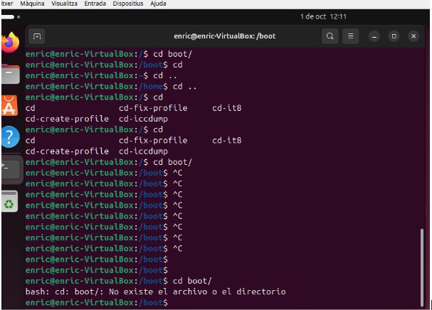
Aqui mirem les comandes i mirem que em eliminat el boot i mirem que no esta el boot
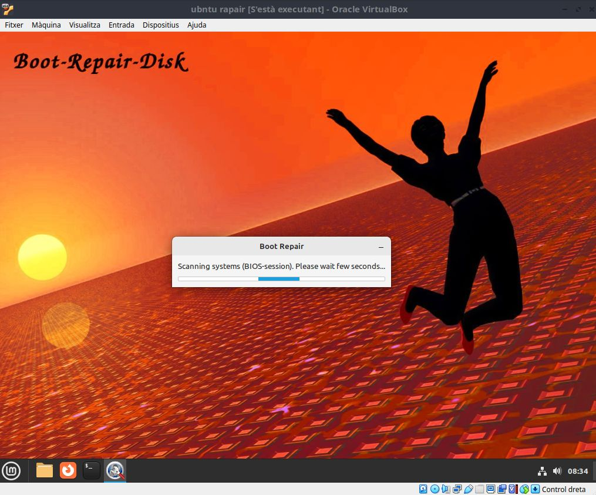
Aqui es veu que eliminem les coses de la carpeta boot i despres tornem a fer la instalació i ja estaria solucionat
Instalació i desinstalació de aplicacuio
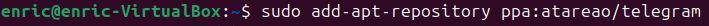
Qui es veu que crem el repositori per instalar el telegram a la maquina virtual
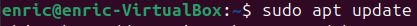
Feu un sudo apt update per actualizar i que aparege el repositori i no surtiguen errors inesperats

Fem el install del telegram i esprem a que se instale
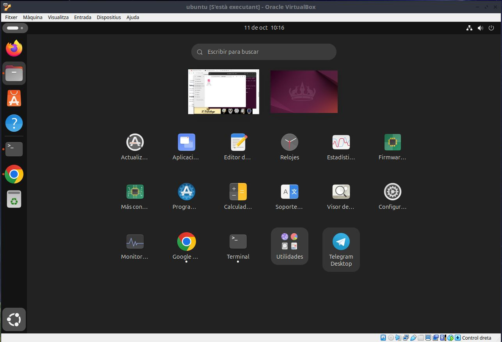
Aqui es veu que esta instalat el telegram
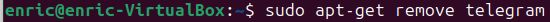
Fiquem la comanda per eliminar el telegram i revisem que estigui eliminat
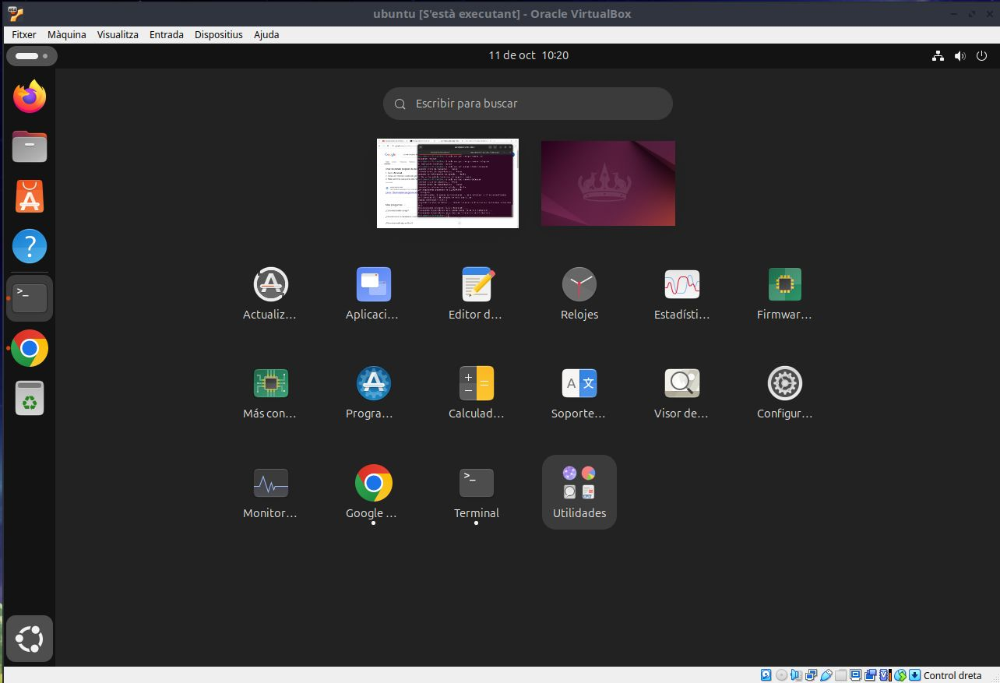
Com es pot comprobar esta eliminat
Creative Commons
Enric act © 2024 by Enric is licensed under Creative Commons Attribution 4.0 International [Creative Commons](https://creativecommons.org/licenses/by/4.0/?ref=chooser-v1)